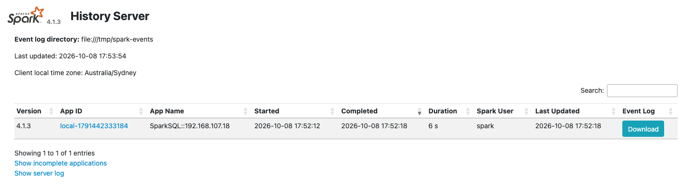
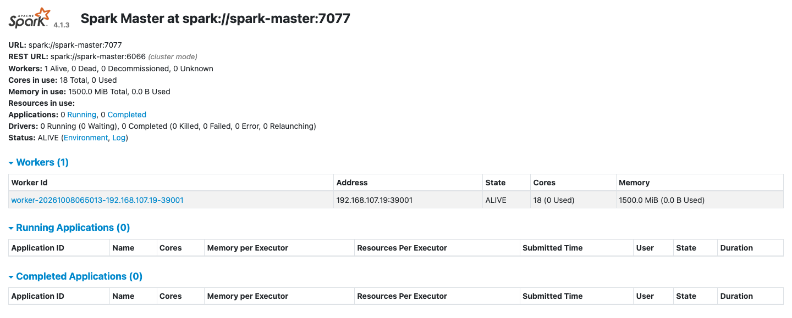

Spark
The spark-lite profile runs a Spark master, one worker and the Spark History Server. spark-full runs three workers. Spark's default catalog is iceberg, already pointed at the Iceberg REST catalog, so spark-sql reads and writes Iceberg tables with no extra settings. The end-to-end tests run the commands below on every release.
This guide builds on Kafka, which writes and reads a topic, and Flink SQL, whose Avro records the last step reads. Start the profile:
| docs/snippets/spark/commands.sh:up | |
|---|---|
| Endpoint | Address |
|---|---|
| Spark master UI from the host | http://127.0.0.1:9080 |
| Master URL from the host | spark://127.0.0.1:7077 |
| Spark History Server from the host | http://127.0.0.1:18080 |
Master URL inside the odctl network |
spark://spark-master:7077 |
Spark History Server inside the odctl network |
http://spark-history:18080 |
Run SQL Against Iceberg
This creates a namespace and a table in the iceberg catalog, inserts three rows and counts them:
| docs/snippets/spark/commands.sh:run-sql | |
|---|---|
The query prints 3. The table is in the same catalog that Flink, Kafka Connect and Trino use, and Ingest into Iceberg shows the other engines writing to it.
See Finished Applications
Every Spark application writes an event log to /tmp/spark-events, which all Spark containers share. This lists the logs:
| docs/snippets/spark/commands.sh:event-logs | |
|---|---|
The command prints one name per application, such as eventlog_v2_local-1792817297659. The Spark History Server at http://127.0.0.1:18080 reads the same directory, so the spark-sql run above appears there after it ends, with its jobs, stages and SQL plans. The master UI at http://127.0.0.1:9080 shows the workers and the applications the master has run.
The event logs are on a volume held in memory, so odctl down removes them.
The History Server lists the spark-sql run:

The master UI at http://127.0.0.1:9080 lists the worker:

Read a Kafka Topic
The Kafka connector for Spark is in the shared volume with its dependencies, so a job reads Kafka with no --packages option. Start kafka-lite beside Spark:
| docs/snippets/spark/commands.sh:up-kafka-lite | |
|---|---|
This creates the topic spark-demo and writes three messages to it:
Save this PySpark job as read_kafka.py. A batch read with spark.read reads the topic from its first offset to its last and then ends:
Copy the file into the master container and submit it:
| docs/snippets/spark/commands.sh:kafka-read | |
|---|---|
The job prints a table with the values {"n":1}, {"n":2} and {"n":3}. Kafka returns each message as binary key and value columns, with the topic, partition, offset, timestamp and timestampType beside them.
Read Avro Records Written with the Schema Registry
The orders topic that Flink SQL fills holds Avro records written with the Karapace schema registry. Each value is a zero byte, the 4-byte id of the schema, and then the record in Avro's binary encoding, so Spark cannot read it as text. Save this job as read_avro.py. It gets the latest schema of the subject orders-value from Karapace, drops the 5 bytes and decodes the rest with from_avro, which needs no --packages option because the Avro module is in the shared volume. This works when all records were written with the subject's latest schema version. If the Flink section has not run, the job stops with HTTP Error 404: Not Found, because the subject does not exist yet.
Copy the file into the master container and submit it:
| docs/snippets/spark/commands.sh:avro-read | |
|---|---|
The job prints a table with the columns supplier and price, and the rows a 5.0, a 10.0 and b 7.5.
From Another Container
Inside the odctl network, submit applications to spark://spark-master:7077. Spark's settings, including the catalog and S3 access to SeaweedFS, are in spark/spark-defaults.conf in the workspace.
Runnable Example
Save this file as example.sh and run it with bash example.sh in the folder that holds your .odctl workspace. It runs the Iceberg and Kafka steps above with a table and a topic of its own for each run, and writes the PySpark job into the master container itself:
It prints 3, Created topic with the topic's name, and a table with the values {"n":1}, {"n":2} and {"n":3}.